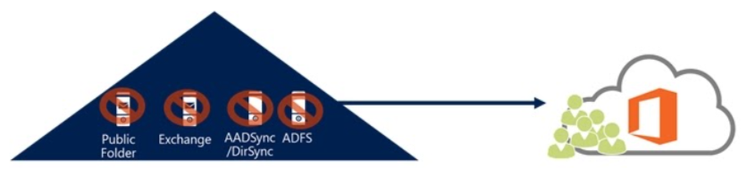
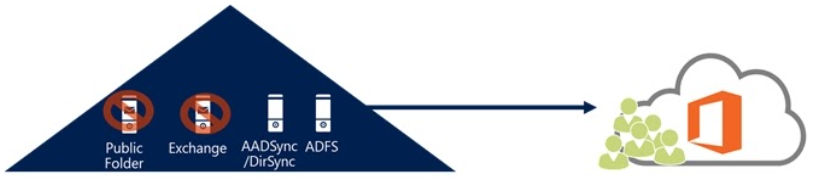
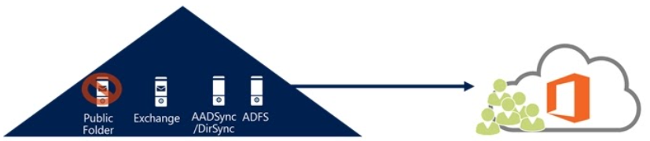

Exchange On Premise
Overview
Previously, Microsoft Hybrid migrations to Exchange Online required you to keep an Exchange server on premise.
Removing it would leave you with an unsupported system.
However, the stance on this is altering as Microsoft are now moving away from on premise email systems. - For most configurations Microsoft are still recommending that you keep at least one Exchange Server on premise if you require synchronisation services.
*Please note that the slido poll results shown later are from the clinic which took place on Friday 14th May 2021
SLIDO 1
What version of MS Exchange Server are you running on premise ? (57 Votes in total)
2010 - 16%
2013 - 33%
2016 - 51%
2019 - 18%
None - 0%
SLIDO 2
Other than Microsoft Requirements, what are you using your on premise Exchange Server for ? (59 Votes in total)
SMTP Relay - 73%
Legacy Application Integration - 42%
Local Mailboxes Not Migrated - 31%
Other Reasons - 17%
All of the Above - 17%
How to secure your on premise Exchange
Ensure it is running the latest version of Exchange Server 2016 (highest CU etc) - Exchange Server 2019 can also be used but requires a full license
A free hybrid only license for Exchange 2016 is available as part of Exchange
Online services if you are running earlier versions so no license cost is involved.
Regularly patch the host server OS and Exchange software
Secure the transit between the Exchange Server and Microsoft Servers (e.g only allowing traffic to/from approved sources through perimeter firewalls)
Lock traffic to/from Exchange server to only go to approved Microsoft Servers
Tidy up publicly published DNS records that are no longer required
SLIDO 3
How often do you check for updates and patch your Exchange Server Application ? (59 Votes in total)
Monthly - 81%
Quarterly - 12%
When I Get Around To It - 7%
It’s Working - Why Patch It - 0%
Microsoft Scenarios
Microsoft Scenario 1
Issue: My organization has been running in a hybrid configuration and I have all of my mailboxes in Exchange Online. I do not need to manage my users from on-premises and no longer have a need for directory synchronization or password synchronization.
Solution: Since all of the users will be managed in Microsoft 365 or Office 365, and there are no additional directory synchronization requirements, you can safely disable directory synchronization and remove Exchange from the on-premises environment.

Microsoft Scenario 2
Issue: My organization has been running in a hybrid configuration for about a year now and have finally moved my last mailbox to the cloud.
I plan to keep Active Directory Federation Services (AD FS) for user authentication of my Exchange Online mailboxes. (This scenario would apply to any customer that is planning on keeping directory synchronisation).
Reasons to keep directory synchronisation in place are manyfold. The primary reason would be SSO with Azure Services.
Desired State:

Solution:
Since it is planned to keep AD FS, they will also have to keep directory synchronisation since it is a prerequisite.
Because of that, they cannot fully remove the Exchange servers from the on-premises environment. However, they can decommission most of the Exchange servers, but leave at least one of servers behind for user management.
Keep in mind that the servers that are left running can be run on virtual machines since the workload is almost completely shifted to Exchange Online.
Achievable State:

If you choose to remove ADFS from your infrastructure, Azure AD Connect will synchronize your on-premises credentials with the cloud.
Each service will authenticate users independently:
Microsoft 365 identity services will manage online requests.
Active directory will manage the internal authentication.
If you don’t have any on-premises mailbox(es), you can safely decommission most of your exchange server(s), leaving one or more for user management purposes - because the source of authority is still defined as on-premises.
Microsoft scenario 3
Issue:
I want to remove my Exchange servers on-premises after moving all of my mailboxes to Exchange Online.
However, we discovered that we are using Exchange for other purposes, such as for a Simple Mail Transfer Protocol (SMTP) relay for an application or for access to public folders.
If you have a need for Exchange servers on-premises to meet the current needs of your organization, it may not be in your best interest to remove the on-premises servers.
Solution:
We recommend against removing Exchange and the hybrid configuration at this point.
If you were to even start the process by pointing the Autodiscover Records to Exchange Online, you would immediately break some features like hybrid public folder access.
You could change the MX record to point to Exchange Online Protection if it is not already, you could even remove some of the on-premises Exchange servers
However, you would need to keep enough in place to handle the remaining hybrid functions.
Usually, this would lead to a very small on-premises footprint.
SLIDO 4
What Directory Synchronisation are you using ? (59 Votes in total)
Azure AD Connect - 81%
ADFS - 17%
Legacy (DirSync etc) - 0%
None - 2%
The Future
As we stand, Microsoft are scheduled to retire Exchange Server 2016 and 2019 from extended support on the same date (14 Oct 2025).
On this basis the general assumption is they will have given us a way to retire the Hybrid on premise Exchange server before this date.
Summary
If you have a Hybrid Exchange configuration you MUST keep at least one Exchange Server present onsite.
Unless you are wanting to host mailboxes on it you can use the FREE Exchange Server 2016 Hybrid license key - it is provided with Exchange Online for this reason.
If you have no requirement for directory synchronisation between on premise AD and Azure AD you can get rid of any remaining on premise Exchange Servers, but remember they may be doing more than just host mailboxes (local relays, management, etc).
If all your mailboxes and mailflow is M365 based - lock down your local firewall and Exchange server to only communicate with M365. This will reduce any potential attack surface.
Further Reading
Here are some recommendations for further research into Exchange hybrid configurations, with particular reference to the need for an on premise server, and when it is not needed.
Exchange Server hybrid deployments:
https://docs.microsoft.com/en-us/exchange/exchange-hybrid
How and when to decommission your on-premises Exchange Server in a hybrid deployment:
https://docs.microsoft.com/en-us/exchange/decommission-on-premises-exchange
https://practical365.com/how-to-decommission-an-exchange-server-after-office-365-migration/
Directory Synchronisation
https://docs.microsoft.com/en-us/microsoft-365/enterprise/plan-for-directory-synchronization?view=o365-worldwide
Appendices
On-premise Exchange Server
Although Exchange 2010SP3 and above are currently in scope of support for the on premise Exchange Hybrid Connection Server, Microsoft provides a license for Exchange Server 2016 Standard (Hybrid) as part of Exchange Online configurations (NOT Exchange 2019 though).
This license does not allow for the hosting of user mailboxes and is strictly for Exchange Online Hybrid Connectivity and Management.